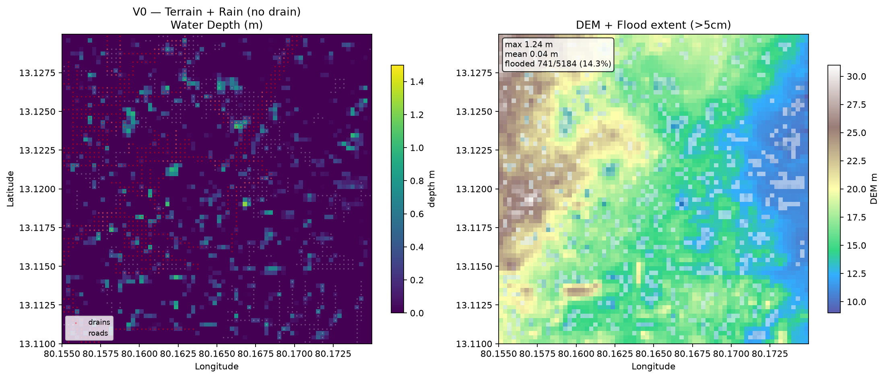
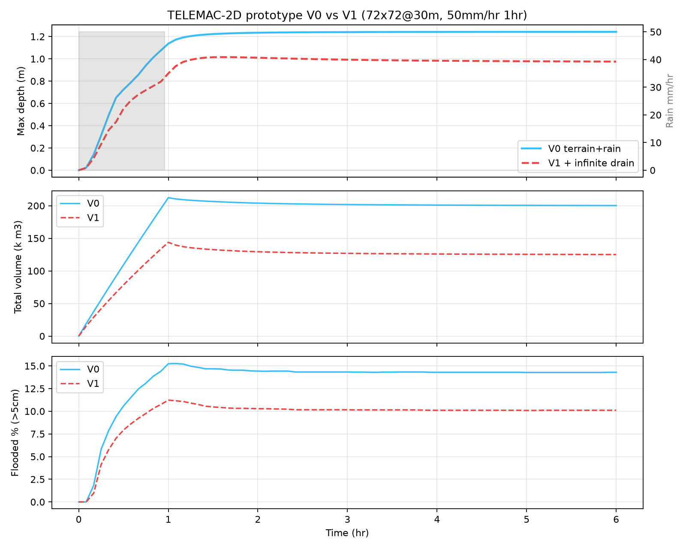

MATSYA TELEMAC-2D — What you’re seeing
72×72 @30m (4.8 km²) 80.155-80.175E,13.11-13.13N • CartoDEM 30m • 140 drains • 50 mm/hr×1 hr • V0=rain on terrain, V1=+drains
Left: V0 — Terrain + Rain (NO drains)

Purple left plot: Water Depth (m) — 72×72 grid. Purple 0, cyan 0.1-0.3, yellow 1.0+. Scattered dots = ponded water in depressions. No drains to remove it, so water sits.
Right plot: DEM (terrain) brown high west 30.5m → blue low east 9.26m, overlaid blue where depth>5cm (flood). Yellow box: max 1.34m mean 0.04 flooded 14.3%.
Right: V1 — + Infinite Drain (drains can take unlimited water)
Same rain/terrain, but red drain lines are sinks: at each red cell (drain_mask 826 cells 15.9% `input/drain_mask.npy`) water is removed 70% per step → infinite capacity.
Purple plot: noticeably fewer cyan/yellow dots (drains removed water).
Terrain plot: flood drops to 10.1% (vs 14.3%), max 0.98m (vs 1.24m). Difference = terrain-driven flood that drains can’t fix.
Time evolution (what slider was supposed to animate)

X = hours (0-6), Y left = max depth (m), Y right = flooded %.
• Blue V0 rises 0→0.31 (00:15)→0.85 (00:40)→1.14 (01:00, rain stops) → stays ~1.24 ponded till 06:00 (free outflow east is weak).
• Red dashed V1 lower: 0.23 (00:15)→0.68→0.87 (01:00)→0.98, then decays to 0.97 (drains + outflow).
• Green V0 flooded% 0→1.8% (00:10)→14.3% (01:00) → stays.
• Rain bar gray: 50 mm/hr 0-1hr only.
Slider at 03:20 (you were) = 3.33 hr, rain 0, V0 1.24m 14.3% — post-rain ponded, slowly draining. That’s why map looks static after ~01:30.
Why two side-by-side?
Same storm, same terrain — only drains differ. V0 is baseline (“how much floods from terrain alone?” MATSYA_CONTEXT.md:11). V1 is ideal (“if drains unlimited, what remains?” MATSYA_CONTEXT.md:12). Difference = drain benefit: -29% flooded, -0.27 m depth — but 10% still floods → need V2 real capacity + V3 rivers.
Why “API KEY REQUIRED” background before?
Leaflet basemap tile.openstreetmap.org now blocks missing Referer (403) + Esri needs key. Fixed to plain background + OSM France HOT (no key). The white rectangles with the two plots are the actual results (depth_V0.png as imageOverlay), not the basemap. Simple view here shows them directly as <img> — no tiles needed.
Static PNGs: depth_V0.png depth_V1.png diff_V0_V1.png timeseries_V0_V1.png in test/TELEMAC-2D/visualization/ — open directly without server. Live Leaflet will be fixed to Carto/OSM France HOT; hard reload Ctrl+Shift+R http://localhost:8001 if you want map.